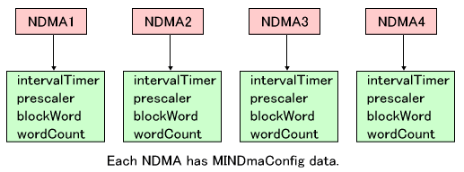
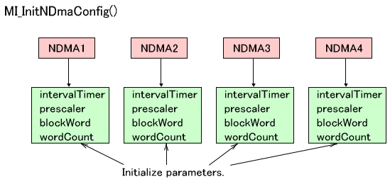
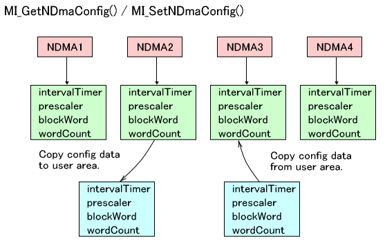
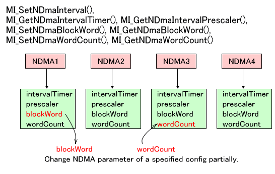
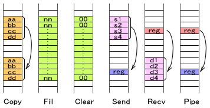

TWL ハードウェアでは、NITRO で用意されていた4つの DMA に加え、さらに4つの新規DMA が用意されています。新規DMA では従来の DMA 以上に細かな設定を行うことができます。ここでは新規 DMA について説明します。
新規DMA では、動作時に MINDmaConfig構造体メンバをパラメータとして使用します。この構造体には全体の転送量や、転送元アドレス、転送先アドレスといった、その都度変わる値ではなく、通常は
DMA動作ごとに変化がそれほどないと思われるものがここに含まれます。
具体的には構造体に含まれるのは以下の値となります。
| メンバ名 | 説明 | 関係するレジスタ | 初期値 |
|---|---|---|---|
intervalTimer |
ブロック転送のインターバルタイマーです。 | DMAxBCNT の d15-0 | MI_NDMA_NO_INTERVAL |
prescaler |
ブロック転送インターバルタイマーのプリスケーラです。 | DMAxBCNT の d17-16 | MI_NDMA_INTERVAL_PS_1 |
blockWord |
ブロック転送ワード数です。 | DMAx_CNT の d19-16 | MI_NDMA_BWORD_1 |
wordCount |
転送ワード数です。 | DMAxWCNT | MI_NDMA_AT_A_TIME |
ライブラリ内部では、4つの新規DMA それぞれに構造体が与えられているので、それぞれが異なる設定でDMAを行うことが出来ます。

すべての NDMA の MINDmaConfig構造体メンバを初期値に戻すのは、 MI_InitNDmaConfig() です。これは OS_Init() から呼ばれる MI_InitNDma() から呼ばれますのでユーザが行う必要はありません。

ユーザが用意した MINDmaConfig 構造体に、現在 新規 DMA に設定されている MINDmaConfig 構造体をコピーするのは MI_GetNDmaConfig() となります。またユーザが用意した MINDmaConfig 構造体を 新規 DMA に設定されている MINDmaConfig 構造体にコピーするのは MI_SetNDmaConfig() となります。

新規 DMA に設定されている MINDmaConfig 構造体の一部のメンバを書き換えたり取得するのならば、MI_SetNDmaInterval(), MI_GetNDmaIntervalTimer(), MI_GetNDmaIntervalPrescaler(), MI_SetNDmaBlockWord(), MI_GetNDmaBlockWord(), MI_SetNDmaWordCount(), MI_GetNDmaWordCount() となります。

書き換えた設定値は、前述の MI_InitNDmaConfig() を行えば初期値に戻ります。
新規DMA には以下の命令が存在します。
MI_NDmaCopy*() 新規DMA を用いてコピーを行います。
MI_NDmaFill*() 新規DMAを用いて指定のデータで埋めます。
MI_NDmaClear*() 新規DMAを用いて 0 で埋めます。
MI_NDmaSend*() 新規DMAを用いて固定アドレスにデータを送り込みます。
MI_NDmaRecv*() 新規DMAを用いて固定アドレスからデータを読み込みます。
MI_NDmaPipe*() 新規DMAを用いて固定アドレスから固定アドレスへデータを送ります。
固定アドレスからデータを読んだり書いたりするのは、しばしば I/O レジスタを対象にした動作で行われます。

それぞれに対し、細かな動作の違いで派生関数が存在します。以下、MI_NDmaCopy*() を例にとって説明しますが、その他の命名ルールも同様ですので必要に応じて読み替えてください。
MI_NDmaCopy() と MI_NDmaCopyAsync()「Async」が付く関数は非同期関数です。一方付かない方は同期関数です。同期関数は新規
DMA の終了を確実に待ちますが、非同期関数は終了を待たずに関数を抜けます。非同期関数には動作終了時に呼ばれるコールバック関数が設定出来るのでそれを使うか、その新規
DMA チャンネルが使用中かどうかを知る MI_IsNDmaBusy() で終了を知ることが出来ます。また、その新規 DMA チャンネルが使用可能な状態になるまで待つ MI_WaitNDma() が用意されています。
MI_NDmaCopy() と MI_NDmaCopyEx()「Ex」が付く関数は MINDmaConfig 構造体を外から与えます。一方「Ex」が付かない関数はすでに設定されていて内部で保持している MINDmaConfig 構造体を用います。「Ex」付き関数は、一時的に通常使用するものと異なったパラメータでDMA動作をさせたい場合などに有効です。
MI_NDmaCopy() と MI_NDmaCopy_Dev()「_Dev」が付く関数は周辺デバイスなどの割込みに同期してDMA動作を開始します。一方「_Dev」が付かない関数はすぐに動作を開始します。周辺デバイスとして指定できる値は後述の
「DMA起動のタイミングについて」 を参照してください。
MI_NDmaCopy() と MI_NDmaCopy_SetUp()「_SetUp」が付く関数は実際には DMA を行わず設定のみを行います。実際の DMA開始は
MI_NDmaRestart() の呼び出し以降となります。
この4つの区別により、MI_NDmaCopy*() には 以下の16種類の関数が存在します。
| 関数 | 同期・非同期 | MINDmaConfig | DMAの開始 |
|---|---|---|---|
_SetUp なし (DMA 実行) |
|||
MI_NDmaCopy() |
同期 | ライブラリ内部 | 即時 |
MI_NDmaCopyAsync() |
非同期 | ライブラリ内部 | 即時 |
MI_NDmaCopyEx() |
同期 | ユーザ指定 | 即時 |
MI_NDmaCopyExAsync() |
非同期 | ユーザ指定 | 即時 |
MI_NDmaCopy_Dev() |
同期 | ライブラリ内部 | 周辺デバイスからの割り込み |
MI_NDmaCopyAsync_Dev() |
非同期 | ライブラリ内部 | 周辺デバイスからの割り込み |
MI_NDmaCopyEx_Dev() |
同期 | ユーザ指定 | 周辺デバイスからの割り込み |
MI_NDmaCopyExAsync_Dev() |
非同期 | ユーザ指定 | 周辺デバイスからの割り込み |
_SetUp あり (DMA 実行のための設定のみ) |
|||
MI_NDmaCopy_SetUp() |
同期 | ライブラリ内部 | 即時 |
MI_NDmaCopyAsync_SetUp() |
非同期 | ライブラリ内部 | 即時 |
MI_NDmaCopyEx_SetUp() |
同期 | ユーザ指定 | 即時 |
MI_NDmaCopyExAsync_SetUp() |
非同期 | ユーザ指定 | 即時 |
MI_NDmaCopy_Dev_SetUp() |
同期 | ライブラリ内部 | 周辺デバイスからの割り込み |
MI_NDmaCopyAsync_Dev_SetUp() |
非同期 | ライブラリ内部 | 周辺デバイスからの割り込み |
MI_NDmaCopyEx_Dev_SetUp() |
同期 | ユーザ指定 | 周辺デバイスからの割り込み |
MI_NDmaCopyExAsync_Dev_SetUp() |
非同期 | ユーザ指定 | 周辺デバイスからの割り込み |
指定の新規DMAを停止するには MI_StopNDma() を呼んでください。
すべての新規DMAを停止するには MI_StopAllNDma() を呼んでください。新規DMA 0 〜3 に対し順に MI_StopNDma() を呼ぶ関数となっています。
新規DMA の各チャンネル間の調停方式は、固定方式 と ラウンドロビン(循環)方式 から選ぶことが出来ます。
固定方式の場合、優先順位が固定で設定され、現在起動しているDMAチャンネルより優先度の高いDMAチャンネルの起動要求がかかると、指定の転送ワード数のブロックDMA転送の転送完了時に一時中断し、優先順位の高い DMA チャンネルのDMA転送が実行されます。逆に現在起動している DMAチャンネルより優先度の低い DMA チャンネルの起動要求がかかっても保留されます。
ラウンドロビン(循環)方式の場合、起動要求中の DMA チャンネルを調べ、各汎用DMAの指定された転送ワード数のブロックDMA転送の転送完了時に、すべての DMA 転送要求中の DMA チャンネルおよびDSP、ARM9からのAHB バス要求を含め、DMA0, DMA1, DMA2, DMA3, DSP or ARM9, DMA0, DMA1, DMA2,… の順番に循環方式により AHBバスの所有権を切り替えます。
ラウンドロビン(循環)方式の場合、DSP or ARM9 の AHB バス要求時にアクセス可能なサイクル数を設定することが出来ます。
調停方式の設定と、ラウンドロビン時のアクセス可能サイクル数の設定は以下の関数で行います。
MI_SetNDmaArbitrament()
現在設定されている値の取得は以下の関数で行います。
MI_GetNDmaArbitrament()
MI_GetNDmaArbitramentRoundRobinCycle()
AHBバスに対する優先順位は以下のようになります。
DMAの調停方式を固定方式にした場合:
旧DMAC0 > 旧DMAC1 > 旧DMAC2 ＞ 旧DMAC3 > 新DMAC0 > 新DMAC1 > 新DMAC2 > 新DMA3 > DSP > ARM9
DMAの調停方式をラウンドロビン方式にした場合:
旧DMAC0 > 旧DMAC1 > 旧DMAC2 ＞ 旧DMAC3 > (新DMAC0 = 新DMAC1
= 新DMAC2 = 新DMA3) > DSP > ARM9
のように、新規DMA では優先順位がなくなり、循環的にバス所有権が移動します。
新規DMA 関数のうち、MI_NDmaCopy_Dev() のように、「_Dev」 のつく関数はDMA の起動タイミングを周辺デバイスからの割込みなどによる起動要求に依存させることが出来ます。
「_Dev」 の付かない関数は即時起動です。
この指定は MINDmaDevice 型 (u32 の typedef です) の値を関数の引数として与えて行います。値と起動タイミングは以下の通りです。
| MINDmaDevice 型の値 | 新規DMA の起動タイミング |
|---|---|
MI_NDMA_TIMING_TIMER0 |
タイマー0 の DMA 起動要求による |
MI_NDMA_TIMING_TIMER1 |
タイマー1 の DMA 起動要求による |
MI_NDMA_TIMING_TIMER2 |
タイマー2 の DMA 起動要求による |
MI_NDMA_TIMING_TIMER3 |
タイマー3 の DMA 起動要求による |
MI_NDMA_TIMING_CARD |
カードの DMA 起動要求による |
MI_NDMA_TIMING_V_BLANK |
Vブランク の DMA 起動要求による |
MI_NDMA_TIMING_H_BLANK |
Hブランク の DMA 起動要求による |
MI_NDMA_TIMING_DISP |
表示に同期した DMA 起動要求による |
MI_NDMA_TIMING_DISP_MMEM |
ワークRAM表示に同期した DMA 起動要求による |
MI_NDMA_TIMING_GXFIFO |
ジオメトリコマンドFIFOの DMA 起動要求による |
MI_NDMA_TIMING_CAMERA |
カメラ転送 の DMA 起動要求による |
2008/11/19 起動タイミングの情報を追記
2008/09/11 初版